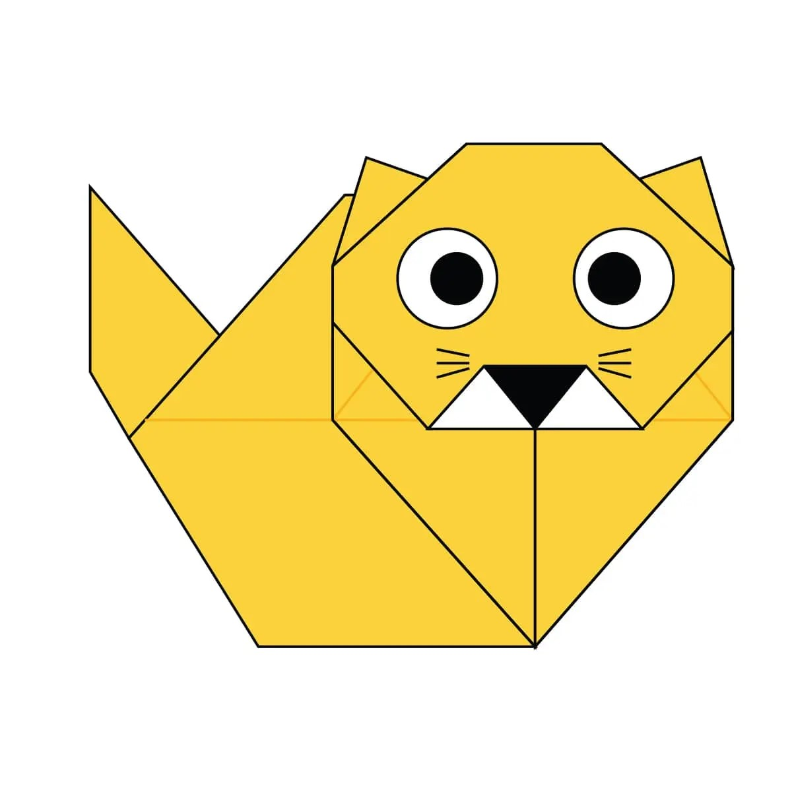

Cat
- Cats are believed to be the only mammals who don’t taste sweetness
- Cats can jump up to six times their length
- Cats really dislike citrus scents.

Chameleon
- The chameleons's eyes can rotate 180 Degree
- Chameleons do not have ear openings but they are not deaf
- Chameleons tongue can reach its prey in just 0.07 split seconds
Lion
- Lions’s roar can be heard from as far as 5 miles away
- Lions may sleep up to 20 hours a day
- Lions run at a speed of up to 81kmph
Panda
- Panda is the national animal of China
- Pandas spend 10-16 hours a day feeding, mainly on bamboo
- Baby pandas are born pink
Owl
- Owls can rotate their necks at 270 degrees, 135 degrees on either side
- Owls have asymmetrical ears
- Most owls are active at night
T-Rex
- Tyrannosaurus Rex means 'Tyrant Lizard'
- T-Rex lived in cretaceous period
- The largest T-Rex tooth found is 12 inches